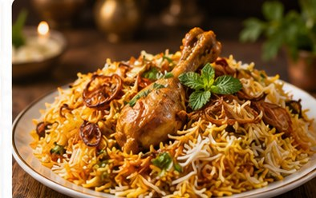
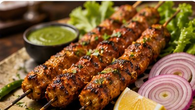
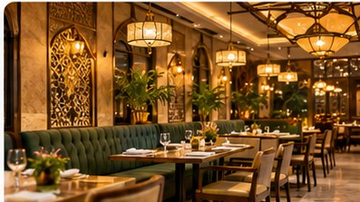
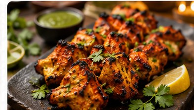
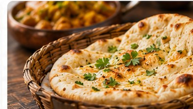
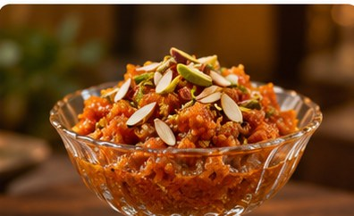
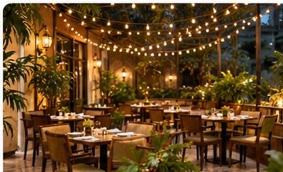

THE TASTEKITCHEN GALLERY
A Feast for the Eyes
Explore generated food and dining imagery that brings our fictional restaurant concept to life.








Images are AI-generated demonstrations, not photographs of an operating restaurant.